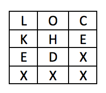

Problem made by Lockheed Martin, is CodeQuest 2014 Problem 12
This problem has a difficulty of 55
The Caesar and Syctale ciphers are very old ciphers used by the ancient Greeks to encrypt secret messages. In this problem you will be decrypting a message that has been encoded using both methods.
The Caesar cipher is a form of a substitution cipher because it substitutes letters for other letters. A Caesar cipher just shifts letters however many positions to the left or the right. For example:
LOCKHEED --> right shift 3 --> ORFNKHHG
Letters are shifted as if we were using an alphabet ring. That is, shifting Z to the right produces an A, and so forth. So, the string “Zebra” shifted 1 position to the right would be “Afcsb”. Note that capitalization is retained.
The Scytale cipher is a form of transposition in that it rearranges letters into different positions. In a Scytale cipher, you would wrap a very long piece of paper around a stick and write your message going across. The message would be unreadable when unwrapped. You had to use the same stick to decrypt the message. This is similar to picking a two dimensional array and filling it with the message. For example, the word “LOCKHEED” using a 4x3 array would produce this:

A capital X is used to pad the array if the message doesn’t fill the array exactly. To “unravel” the paper, read the array from top to bottom, left to right:
LOCKHEED --> LKEXOHDXCEXX
For this problem, you must decrypt a message that was encrypted using the Caesar cipher followed by a Scytale. Let’s look at the “LOCKHEED” example:
LOCKHEED --> Caesar +3 --> ORFNKHHG --> Scytale 4x3 --> ONHXRKGXFHXX
There are a couple of things that are important to note:
• If the input string was too short to fill the array exactly, the encrypted Scytale string will have more characters than the original decrypted message. Be careful when printing your output because of this. You can assume that the original message does not end in a capital X.
• You will not know the array size that was used to perform the Scytale cipher, but it is guaranteed that the number of characters in the encoded input file will fit exactly into the array used.
• You will not know the shift value that was used to perform the Caesar cipher, but the original text is guaranteed to have the word “Dear” in it. Shifting the letters in the word “Dear” n times produces no other word in the English language, so it is a sufficient key to know that the decoding has been successful.
The file Prob12.in.txt will contain some number of lines of encoded text. The file in its entirety should be decoded all at once – each line is not separately encoded. Rather, the lines together form one long string for encoding and decoding purposes.
JouyWOjkg
rkgjIacuyzrgxguk
oszoXxeejyreZ
yXJZokzrh
ngX
Your program should output the decoded message. Your line lengths should match the input file, with the additional padded characters (if any) removed from the end of the file.
DearDiary
TodayisCodeQuest